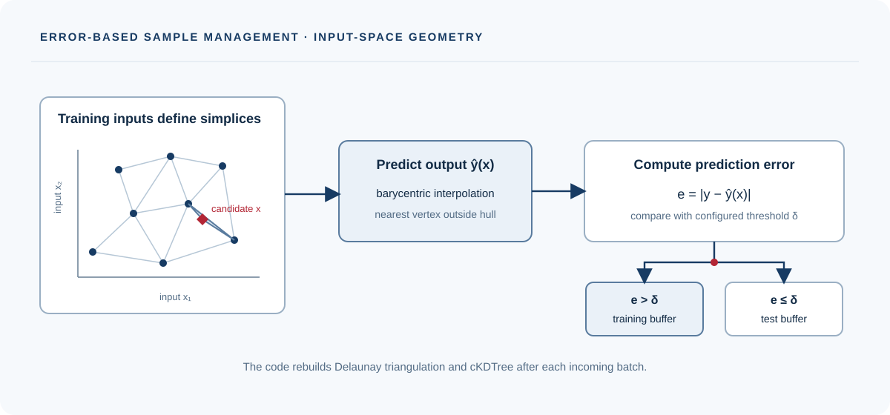

Interpolation error
Compares observed outputs with the Manager's prediction for each new input.
A research codebase that uses interpolation error to assign incoming points to training and test buffers, with experiment scripts for regression and system identification.

Compares observed outputs with the Manager's prediction for each new input.
Delaunay triangulation and cKDTree support interpolation and nearest-vertex fallback.
Examples cover synthetic regression and several dynamics or application tasks.
Points with error above δ enter the training buffer; others enter the test buffer.